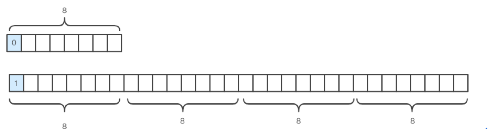

<!DOCTYPE HTML>
<html lang="zh-CN">
<head><meta name="generator" content="Hexo 3.8.0">
    <!--Setting-->
    <meta charset="UTF-8">
    <meta name="viewport" content="width=device-width, user-scalable=no, initial-scale=1.0, maximum-scale=1.0, minimum-scale=1.0">
    <meta http-equiv="X-UA-Compatible" content="IE=Edge,chrome=1">
    <meta http-equiv="Cache-Control" content="no-siteapp">
    <meta http-equiv="Cache-Control" content="no-transform">
    <meta name="renderer" content="webkit|ie-comp|ie-stand">
    <meta name="apple-mobile-web-app-capable" content="我的博客 - blog">
    <meta name="apple-mobile-web-app-status-bar-style" content="black">
    <meta name="format-detection" content="telephone=no,email=no,adress=no">
    <meta name="browsermode" content="application">
    <meta name="screen-orientation" content="portrait">
    <link rel="dns-prefetch" href="https://lives.xtcgch.ink">
    <!--SEO-->

<meta name="description" content="脑容量不够，笔记来凑">


<meta name="robots" content="all">
<meta name="google" content="all">
<meta name="googlebot" content="all">
<meta name="verify" content="all">
    <!--Title-->


<title>Nginx中FastCGI的解读 | 我的博客 - blog</title>


    <link rel="alternate" href="/atom.xml" title="我的博客 - blog" type="application/atom+xml">


    <link rel="icon" href="https://blog.xtcgch.ink/img/background/海绵宝宝.ico">

    


<link rel="stylesheet" href="/css/bootstrap.min.css?rev=3.3.7">
<link rel="stylesheet" href="/css/font-awesome.min.css?rev=4.5.0">
<link rel="stylesheet" href="/css/style.css?rev=@@hash">


    


    

</head>

</html>
<!--[if lte IE 8]>
<style>
    html{ font-size: 1em }
</style>
<![endif]-->
<!--[if lte IE 9]>
<div style="ie">你使用的浏览器版本过低，为了你更好的阅读体验，请更新浏览器的版本或者使用其他现代浏览器，比如Chrome、Firefox、Safari等。</div>
<![endif]-->

<body>
    <header class="main-header" style="background-image:url(https://blog.xtcgch.ink/img/head-bg.jpg)">
    <div class="main-header-box">
        <a class="header-avatar" href="/" title="unistd68">
            
        </a>
        <div class="branding">
        	<!--<h2 class="text-hide">Snippet主题,从未如此简单有趣</h2>-->
            
                <h2> 脑容量不够，笔记来凑 </h2>
            
    	</div>
    </div>
</header>
    <nav class="main-navigation">
    <div class="container">
        <div class="row">
            <div class="col-sm-12">
                <div class="navbar-header"><span class="nav-toggle-button collapsed pull-right" data-toggle="collapse" data-target="#main-menu" id="mnav">
                    <span class="sr-only"></span>
                        <i class="fa fa-bars"></i>
                    </span>
                    <a class="navbar-brand" href="https://lives.xtcgch.ink">我的博客 - blog</a>
                </div>
                <div class="collapse navbar-collapse" id="main-menu">
                    <ul class="menu">
                        
                            <li role="presentation" class="text-center">
                                <a href="https://blog.xtcgch.ink/"><i class="fa "></i>主页</a>
                            </li>
                        
                            <li role="presentation" class="text-center">
                                <a href="https://blog.xtcgch.ink/categories/原理/"><i class="fa "></i>原理</a>
                            </li>
                        
                            <li role="presentation" class="text-center">
                                <a href="https://blog.xtcgch.ink/categories/代码/"><i class="fa "></i>代码</a>
                            </li>
                        
                            <li role="presentation" class="text-center">
                                <a href="https://blog.xtcgch.ink/categories/开源/"><i class="fa "></i>开源</a>
                            </li>
                        
                            <li role="presentation" class="text-center">
                                <a href="https://blog.xtcgch.ink/categories/面试/"><i class="fa "></i>面试</a>
                            </li>
                        
                            <li role="presentation" class="text-center">
                                <a href="https://blog.xtcgch.ink/categories/其他/"><i class="fa "></i>其他</a>
                            </li>
                        
                            <li role="presentation" class="text-center">
                                <a href="https://blog.xtcgch.ink/archives/"><i class="fa "></i>时间轴</a>
                            </li>
                        
                    </ul>
                </div>
            </div>
        </div>
    </div>
</nav>
    <section class="content-wrap">
        <div class="container">
            <div class="row">
                <main class="col-md-8 main-content m-post">
                    <p id="process"></p>
<article class="post">
    <div class="post-head">
        <h1 id="Nginx中FastCGI的解读">
            
	            Nginx中FastCGI的解读
            
        </h1>
        <div class="post-meta">
    
    
    <span class="categories-meta fa-wrap">
        <i class="fa fa-folder-open-o"></i>
        <a href="https://blog.xtcgch.ink/categories/原理">
            原理
        </a>
    </span>
    

    
    <span class="fa-wrap">
        <i class="fa fa-tags"></i>
        <span class="tags-meta">
            
                
                    <a href="https://blog.xtcgch.ink/tags/C++" title="C++">
                        C++
                    </a>
                
                    <a href="https://blog.xtcgch.ink/tags/CGI" title="CGI">
                        CGI
                    </a>
                
            
        </span>
    </span>
    

    
        
        <span class="fa-wrap">
            <i class="fa fa-clock-o"></i>
            <span class="date-meta">2019/03/09</span>
        </span>
        
    
</div>

            
            
            <p class="fa fa-exclamation-triangle warning">
                本文于<strong>967</strong>天之前发表，文中内容可能已经过时。
            </p>
        
    </div>
    
    <div class="post-body post-content">
        <p><strong>摘要：</strong>本文主要是阅读ngix中fastcgi的源码来了解c++对http请求体的解析，以及对回复包的封装过程。</p>
<a id="more"></a>
<hr>
<p>1.初识FastCGI协议</p>
<p>1.1消息头</p>
<p>FastCGI定义了多种类型的消息；nginx对FastCGI消息类型定义如下：</p>
<figure class="highlight plain"><table><tr><td class="gutter"><pre><span class="line">1</span><br><span class="line">2</span><br><span class="line">3</span><br><span class="line">4</span><br><span class="line">5</span><br><span class="line">6</span><br><span class="line">7</span><br><span class="line">8</span><br></pre></td><td class="code"><pre><span class="line">#define NGX_HTTP_FASTCGI_BEGIN_REQUEST  1</span><br><span class="line">#define NGX_HTTP_FASTCGI_ABORT_REQUEST  2</span><br><span class="line">#define NGX_HTTP_FASTCGI_END_REQUEST    3</span><br><span class="line">#define NGX_HTTP_FASTCGI_PARAMS         4</span><br><span class="line">#define NGX_HTTP_FASTCGI_STDIN          5</span><br><span class="line">#define NGX_HTTP_FASTCGI_STDOUT         6</span><br><span class="line">#define NGX_HTTP_FASTCGI_STDERR         7</span><br><span class="line">#define NGX_HTTP_FASTCGI_DATA           8</span><br></pre></td></tr></table></figure>
<p>一般情况下，最先发送的是BEGIN_REQUEST类型的消息，然后是PARAMS和STDIN类型的消息；</p>
<p>当FastCGI响应处理完后，将发送STDOUT和STDERR类型的消息，最后以END_REQUEST表示请求的结束。</p>
<p>FastCGI定义了一个统一结构的8个字节消息头，用来标识每个消息的消息体，以及实现消息数据的分割。结构体定义如下：</p>
<figure class="highlight plain"><table><tr><td class="gutter"><pre><span class="line">1</span><br><span class="line">2</span><br><span class="line">3</span><br><span class="line">4</span><br><span class="line">5</span><br><span class="line">6</span><br><span class="line">7</span><br><span class="line">8</span><br><span class="line">9</span><br><span class="line">10</span><br></pre></td><td class="code"><pre><span class="line">typedef struct &#123;</span><br><span class="line">    u_char  version; //FastCGI协议版本</span><br><span class="line">    u_char  type;    //消息类型</span><br><span class="line">    u_char  request_id_hi; //请求ID</span><br><span class="line">    u_char  request_id_lo;</span><br><span class="line">    u_char  content_length_hi; //内容</span><br><span class="line">    u_char  content_length_lo;</span><br><span class="line">    u_char  padding_length;    //内容填充长度</span><br><span class="line">    u_char  reserved;          //保留</span><br><span class="line">&#125; ngx_http_fastcgi_header_t;</span><br></pre></td></tr></table></figure>
<p>我们看到请求ID与内容长度分别用两个u_char存储，实际结果的计算方法如下：<br><figure class="highlight plain"><table><tr><td class="gutter"><pre><span class="line">1</span><br><span class="line">2</span><br></pre></td><td class="code"><pre><span class="line">requestId = (request_id_hi &lt;&lt; 8) + request_id_lo;</span><br><span class="line">contentLength = (content_length_hi &lt;&lt; 8) + content_length_lo;</span><br></pre></td></tr></table></figure></p>
<p>消息体的长度始终是8字节的整数倍，当实际内容长度不足时，需要填充若干字节；填充代码如下所示：</p>
<figure class="highlight plain"><table><tr><td class="gutter"><pre><span class="line">1</span><br><span class="line">2</span><br></pre></td><td class="code"><pre><span class="line">padding = 8 - len % 8;</span><br><span class="line">padding = (padding == 8) ? 0 : padding;</span><br></pre></td></tr></table></figure>
<p>1.2消息体举例</p>
<p>BEGIN_REQUEST类型的消息标识FastCGI请求的开始，结构固定，定义如下：<br><figure class="highlight plain"><table><tr><td class="gutter"><pre><span class="line">1</span><br><span class="line">2</span><br><span class="line">3</span><br><span class="line">4</span><br><span class="line">5</span><br><span class="line">6</span><br></pre></td><td class="code"><pre><span class="line">typedef struct &#123;</span><br><span class="line">    u_char  role_hi; //标记FastCGI应用应该扮演的角色</span><br><span class="line">    u_char  role_lo;</span><br><span class="line">    u_char  flags;</span><br><span class="line">    u_char  reserved[5];</span><br><span class="line">&#125; ngx_http_fastcgi_begin_request_t;</span><br></pre></td></tr></table></figure></p>
<p>角色同样使用两个u_char存储，计算方法为：<br><figure class="highlight plain"><table><tr><td class="gutter"><pre><span class="line">1</span><br></pre></td><td class="code"><pre><span class="line">role = (role_hi &lt;&lt; 8) + role_lo;</span><br></pre></td></tr></table></figure></p>
<p>最常用的是响应器(Responder)角色，FastCGI应用接收所有与HTTP请求相关的信息，并产生一个HTTP响应。</p>
<p>nginx配置文件中，fastcgi_param指令配置的若干参数，以及HTTP请求的消息头，都是通过FCGI_PARAMS类型的消息传递的，此消息就是若干个名—值对（此名—值对在php中可以通过<code>$_SERVER[ ]</code>获取）；</p>
<p>传输格式为nameLength+valueLength+name+value。</p>
<p>为了节省空间，对于<strong>0~127</strong>长度的值，Length使用了一个char来表示，第一位为0，对于大于127的长度的值，Length使用了4个char来表示，第一位为1；</p>
<p></p>
<p>Length字段编码的逻辑如下：<br><figure class="highlight plain"><table><tr><td class="gutter"><pre><span class="line">1</span><br><span class="line">2</span><br><span class="line">3</span><br><span class="line">4</span><br><span class="line">5</span><br><span class="line">6</span><br><span class="line">7</span><br><span class="line">8</span><br><span class="line">9</span><br></pre></td><td class="code"><pre><span class="line">if (val_len &gt; 127) &#123;</span><br><span class="line">    *b-&gt;last++ = (u_char) (((val_len &gt;&gt; 24) &amp; 0x7f) | 0x80);</span><br><span class="line">    *b-&gt;last++ = (u_char) ((val_len &gt;&gt; 16) &amp; 0xff);</span><br><span class="line">    *b-&gt;last++ = (u_char) ((val_len &gt;&gt; 8) &amp; 0xff);</span><br><span class="line">    *b-&gt;last++ = (u_char) (val_len &amp; 0xff);</span><br><span class="line"> </span><br><span class="line">&#125; else &#123;</span><br><span class="line">    *b-&gt;last++ = (u_char) val_len;</span><br><span class="line">&#125;</span><br></pre></td></tr></table></figure></p>
<p>2.基础知识</p>
<p>2.1 FastCGI配置</p>
<p>代码中搜索ngx_http_fastcgi_commands，查看fastcgi模块提供的配置指令；</p>
<figure class="highlight plain"><table><tr><td class="gutter"><pre><span class="line">1</span><br><span class="line">2</span><br><span class="line">3</span><br><span class="line">4</span><br><span class="line">5</span><br><span class="line">6</span><br><span class="line">7</span><br><span class="line">8</span><br><span class="line">9</span><br><span class="line">10</span><br><span class="line">11</span><br><span class="line">12</span><br><span class="line">13</span><br><span class="line">14</span><br><span class="line">15</span><br><span class="line">16</span><br></pre></td><td class="code"><pre><span class="line">static ngx_command_t  ngx_http_fastcgi_commands[] = &#123;</span><br><span class="line"> </span><br><span class="line">    &#123; ngx_string(&quot;fastcgi_pass&quot;),</span><br><span class="line">      NGX_HTTP_LOC_CONF|NGX_HTTP_LIF_CONF|NGX_CONF_TAKE1, //只能出现在location块中</span><br><span class="line">      ngx_http_fastcgi_pass,</span><br><span class="line">      NGX_HTTP_LOC_CONF_OFFSET,</span><br><span class="line">      0,</span><br><span class="line">      NULL &#125;,</span><br><span class="line">    &#123; ngx_string(&quot;fastcgi_param&quot;),</span><br><span class="line">      NGX_HTTP_MAIN_CONF|NGX_HTTP_SRV_CONF|NGX_HTTP_LOC_CONF|NGX_CONF_TAKE23, //可以出现在http配置块、server配置块、location配置块中</span><br><span class="line">      ngx_http_upstream_param_set_slot,</span><br><span class="line">      NGX_HTTP_LOC_CONF_OFFSET,</span><br><span class="line">      offsetof(ngx_http_fastcgi_loc_conf_t, params_source),   //ngx_http_fastcgi_loc_conf_t结构的params_source字段是存储配置参数的array，</span><br><span class="line">      NULL &#125;,</span><br><span class="line">    …………</span><br><span class="line">&#125;</span><br></pre></td></tr></table></figure>
<p>fastcgi_pass指令用于配置上游FastCGI应用的ip:port，ngx_http_fastcgi_pass方法解析此指令（设置handler为ngx_http_fastcgi_handler方法，命中当前location规则的HTTP请求，请求处理的内容产生阶段会调用此handler）；</p>
<p>fastcgi_param用于配置nginx向FastCGI应用传递的参数，在php中，我们可以通过<code>$_SERVER[&quot; &quot;]</code>获取这些参数；</p>
<p>解析fastcgi_param配置的代码实现如下：</p>
<figure class="highlight plain"><table><tr><td class="gutter"><pre><span class="line">1</span><br><span class="line">2</span><br><span class="line">3</span><br><span class="line">4</span><br><span class="line">5</span><br><span class="line">6</span><br><span class="line">7</span><br><span class="line">8</span><br><span class="line">9</span><br><span class="line">10</span><br><span class="line">11</span><br><span class="line">12</span><br><span class="line">13</span><br><span class="line">14</span><br><span class="line">15</span><br><span class="line">16</span><br><span class="line">17</span><br><span class="line">18</span><br></pre></td><td class="code"><pre><span class="line">char * ngx_http_upstream_param_set_slot(ngx_conf_t *cf, ngx_command_t *cmd, void *conf)</span><br><span class="line">&#123;</span><br><span class="line">    a = (ngx_array_t **) (p + cmd-&gt;offset);   //ngx_http_fastcgi_loc_conf_t结构首地址加params_source字段的偏移</span><br><span class="line">    param = ngx_array_push(*a);</span><br><span class="line">     </span><br><span class="line">    value = cf-&gt;args-&gt;elts;</span><br><span class="line">    param-&gt;key = value[1];</span><br><span class="line">    param-&gt;value = value[2];</span><br><span class="line">    param-&gt;skip_empty = 0;</span><br><span class="line"> </span><br><span class="line">    if (cf-&gt;args-&gt;nelts == 4) &#123;   //if_not_empty用于配置参数是否必传（如果配置，当值为空时不会传向FastCGI应用传递此参数）</span><br><span class="line">        if (ngx_strcmp(value[3].data, &quot;if_not_empty&quot;) != 0) &#123;</span><br><span class="line">            return NGX_CONF_ERROR;</span><br><span class="line">        &#125;</span><br><span class="line">        param-&gt;skip_empty = 1;</span><br><span class="line">    &#125;</span><br><span class="line">    return NGX_CONF_OK;</span><br><span class="line">&#125;</span><br></pre></td></tr></table></figure>
<p>2.2FastCGI配置预处理</p>
<p>fastcgi_param配置的所有参数会会存储在ngx_http_fastcgi_loc_conf_t结构体的params_source字段；</p>
<p>nginx为了方便生成fastcgi请求数据，会提前对params_source做一些预处理，预先初始化号每个名—值对的长度以及数据拷贝方法等；</p>
<p>2.1节查看fastcgi模块提供的配置指令时发现，某些配置指令出现在location配置块，有些配置却可以出现http配置块、server配置块和location配置块；即可能出现同一个指令同时出现在好几个配置块中，此时如何解析配置？</p>
<p>对于这些配置指令，nginx最终会执行一个merge操作，合并多个配置为一个；观察nginx的HTTP模块，大多模块都会存在一个merge_loc_conf字段（函数指针），用于merge配置；</p>
<p>fastcgi模块的merge操作由ngx_http_fastcgi_merge_loc_conf完成，其同时对params_source进行了一些预处理；代码如下：</p>
<figure class="highlight plain"><table><tr><td class="gutter"><pre><span class="line">1</span><br><span class="line">2</span><br><span class="line">3</span><br><span class="line">4</span><br><span class="line">5</span><br><span class="line">6</span><br><span class="line">7</span><br><span class="line">8</span><br><span class="line">9</span><br><span class="line">10</span><br><span class="line">11</span><br><span class="line">12</span><br><span class="line">13</span><br><span class="line">14</span><br><span class="line">15</span><br></pre></td><td class="code"><pre><span class="line"></span><br><span class="line">static char * ngx_http_fastcgi_merge_loc_conf(ngx_conf_t *cf, void *parent, void *child)</span><br><span class="line">&#123;</span><br><span class="line">    ngx_conf_merge_msec_value(conf-&gt;upstream.connect_timeout,</span><br><span class="line">                          prev-&gt;upstream.connect_timeout, 60000);</span><br><span class="line">    ngx_conf_merge_value(conf-&gt;upstream.pass_request_headers,</span><br><span class="line">                          prev-&gt;upstream.pass_request_headers, 1);  //配置HTTP头部是否传递给FastCGI应用，默认为1</span><br><span class="line">    ngx_conf_merge_value(conf-&gt;upstream.pass_request_body,</span><br><span class="line">                          prev-&gt;upstream.pass_request_body, 1);     //配置HTTP body是否传递给FastCGI应用，默认为1</span><br><span class="line">    …………</span><br><span class="line"> </span><br><span class="line">    if (ngx_http_fastcgi_merge_params(cf, conf, prev) != NGX_OK) &#123;  //重点，merger并预处理传递给FastCGI应用的参数</span><br><span class="line">    return NGX_CONF_ERROR;</span><br><span class="line">    &#125;</span><br><span class="line">&#125;</span><br></pre></td></tr></table></figure>
<p>ngx_http_fastcgi_merge_params方法主要params_source做了一些预处理，主要处理逻辑如下：</p>
<p>注意：配置参数的名称以HTTP_开始时，此参数可能还是HTTP请求头，需要记录这些参数，以便传递HTTP请求头时排除掉。</p>
<figure class="highlight plain"><table><tr><td class="gutter"><pre><span class="line">1</span><br><span class="line">2</span><br><span class="line">3</span><br><span class="line">4</span><br><span class="line">5</span><br><span class="line">6</span><br><span class="line">7</span><br><span class="line">8</span><br><span class="line">9</span><br><span class="line">10</span><br><span class="line">11</span><br><span class="line">12</span><br><span class="line">13</span><br><span class="line">14</span><br><span class="line">15</span><br><span class="line">16</span><br><span class="line">17</span><br><span class="line">18</span><br><span class="line">19</span><br><span class="line">20</span><br><span class="line">21</span><br><span class="line">22</span><br><span class="line">23</span><br><span class="line">24</span><br><span class="line">25</span><br><span class="line">26</span><br><span class="line">27</span><br><span class="line">28</span><br><span class="line">29</span><br><span class="line">30</span><br><span class="line">31</span><br><span class="line">32</span><br><span class="line">33</span><br><span class="line">34</span><br><span class="line">35</span><br><span class="line">36</span><br><span class="line">37</span><br><span class="line">38</span><br><span class="line">39</span><br><span class="line">40</span><br><span class="line">41</span><br><span class="line">42</span><br><span class="line">43</span><br><span class="line">44</span><br><span class="line">45</span><br><span class="line">46</span><br><span class="line">47</span><br><span class="line">48</span><br><span class="line">49</span><br><span class="line">50</span><br><span class="line">51</span><br><span class="line">52</span><br><span class="line">53</span><br><span class="line">54</span><br><span class="line">55</span><br><span class="line">56</span><br><span class="line">57</span><br><span class="line">58</span><br></pre></td><td class="code"><pre><span class="line">static ngx_int_t ngx_http_fastcgi_merge_params(ngx_conf_t *cf,</span><br><span class="line">    ngx_http_fastcgi_loc_conf_t *conf, ngx_http_fastcgi_loc_conf_t *prev)</span><br><span class="line">&#123;</span><br><span class="line">    if (conf-&gt;params_source) &#123;</span><br><span class="line">        src = conf-&gt;params_source-&gt;elts;</span><br><span class="line">        nsrc = conf-&gt;params_source-&gt;nelts;</span><br><span class="line">    &#125;</span><br><span class="line"> </span><br><span class="line">    conf-&gt;params_len = ngx_array_create(cf-&gt;pool, 64, 1); //params_len用于计算参数名—值的长度</span><br><span class="line">    conf-&gt;params = ngx_array_create(cf-&gt;pool, 512, 1);    //params用于名—值对数据内容的处理（拷贝）</span><br><span class="line">      </span><br><span class="line">    if (ngx_array_init(&amp;headers_names, cf-&gt;temp_pool, 4, sizeof(ngx_hash_key_t)) != NGX_OK)&#123; //存储以HTTP_开始的配置参数，hash表</span><br><span class="line">        return NGX_ERROR;</span><br><span class="line">    &#125;</span><br><span class="line"> </span><br><span class="line">    for (i = 0; i &lt; nsrc; i++) &#123;</span><br><span class="line">        //以HTTP_开始，存储在headers_names hash表</span><br><span class="line">        if (src[i].key.len &gt; sizeof(&quot;HTTP_&quot;) - 1 &amp;&amp; ngx_strncmp(src[i].key.data, &quot;HTTP_&quot;, sizeof(&quot;HTTP_&quot;) - 1) == 0)&#123;</span><br><span class="line">            hk = ngx_array_push(&amp;headers_names);</span><br><span class="line">            hk-&gt;key.len = src[i].key.len - 5;</span><br><span class="line">            hk-&gt;key.data = src[i].key.data + 5;</span><br><span class="line">            hk-&gt;key_hash = ngx_hash_key_lc(hk-&gt;key.data, hk-&gt;key.len);</span><br><span class="line">            hk-&gt;value = (void *) 1;</span><br><span class="line">        &#125;</span><br><span class="line"> </span><br><span class="line"> </span><br><span class="line">        //ngx_http_script_copy_code_t结构体包含两个字段：code函数指针，用于计算参数名称的长度（方法内部直接返回了了len字段）；len是参数名称的长度</span><br><span class="line">        copy = ngx_array_push_n(conf-&gt;params_len, sizeof(ngx_http_script_copy_code_t));</span><br><span class="line">        copy-&gt;code = (ngx_http_script_code_pt) ngx_http_script_copy_len_code;</span><br><span class="line">        copy-&gt;len = src[i].key.len;</span><br><span class="line"> </span><br><span class="line">        //这里的len表示参数是否必传；对于非必传参数，当此参数的值为空时，可以不传递此参数；（ngx_http_script_copy_len_code方法内部直接返回了了len字段，即skip_empty）</span><br><span class="line">        copy = ngx_array_push_n(conf-&gt;params_len, sizeof(ngx_http_script_copy_code_t));</span><br><span class="line">        copy-&gt;code = (ngx_http_script_code_pt) ngx_http_script_copy_len_code;</span><br><span class="line">        copy-&gt;len = src[i].skip_empty;</span><br><span class="line"> </span><br><span class="line">        //ngx_http_script_copy_code_t结构体包含两个字段：code函数指针，实现参数名称内容的拷贝；len数参数名称的长度</span><br><span class="line">        //空间大小为ngx_http_script_copy_code_t结构体长度，加参数名称的长度；最后再8字节对齐</span><br><span class="line">        size = (sizeof(ngx_http_script_copy_code_t) + src[i].key.len + sizeof(uintptr_t) - 1) &amp; ~(sizeof(uintptr_t) - 1);</span><br><span class="line">        copy = ngx_array_push_n(conf-&gt;params, size);</span><br><span class="line">        copy-&gt;code = ngx_http_script_copy_code;</span><br><span class="line">        copy-&gt;len = src[i].key.len;</span><br><span class="line">        //拷贝数据</span><br><span class="line">        p = (u_char *) copy + sizeof(ngx_http_script_copy_code_t);</span><br><span class="line">        ngx_memcpy(p, src[i].key.data, src[i].key.len);</span><br><span class="line"> </span><br><span class="line">        //params_len与params分别存储NULL，以实现存储空间的分隔；及参数与参数之间使用NULL进行隔离；</span><br><span class="line">        code = ngx_array_push_n(conf-&gt;params_len, sizeof(uintptr_t));</span><br><span class="line">        *code = (uintptr_t) NULL;</span><br><span class="line">        code = ngx_array_push_n(conf-&gt;params, sizeof(uintptr_t));</span><br><span class="line">        *code = (uintptr_t) NULL;</span><br><span class="line">    &#125;</span><br><span class="line"> </span><br><span class="line">    conf-&gt;header_params = headers_names.nelts; //以HTTP_开始的参数存储在conf的header_params与headers_hash字段</span><br><span class="line">    hash.hash = &amp;conf-&gt;headers_hash;</span><br><span class="line">    ……</span><br><span class="line">    return ngx_hash_init(&amp;hash, headers_names.elts, headers_names.nelts);  </span><br><span class="line">&#125;</span><br></pre></td></tr></table></figure>
<p>根据上面的代码逻辑，很容易画出params_len与params的内部存储结构：</p>
<p>问题：参数是名—值对，这里的代码只对参数名称进行了预处理，参数的值呢？参数的值应该与请求相对应的，在解析配置文件时，并没有请求对应的信息，如何预处理参数的值呢？</p>
<p>一般fastcgi的参数是以下这些配置：<br><figure class="highlight plain"><table><tr><td class="gutter"><pre><span class="line">1</span><br><span class="line">2</span><br><span class="line">3</span><br><span class="line">4</span><br><span class="line">5</span><br></pre></td><td class="code"><pre><span class="line">fastcgi_param  SCRIPT_FILENAME    $document_root$fastcgi_script_name;</span><br><span class="line">fastcgi_param  QUERY_STRING       $query_string;</span><br><span class="line">fastcgi_param  REQUEST_METHOD     $request_method;</span><br><span class="line">fastcgi_param  CONTENT_TYPE       $content_type;</span><br><span class="line">fastcgi_param  CONTENT_LENGTH     $content_length</span><br></pre></td></tr></table></figure></p>
<p>参数的值其实就是nginx提供的一系列可以直接使用变量（在ngx_http_variable.c文件中查找ngx_http_core_variables数组，即nginx提供的变量），每个变量都有一个索引值；</p>
<p>预处理fastcgi的配置参数时，其实只需要初始化参数值对应的变量索引即可；（注意参数的值可能是由多个nginx变量组合而成）</p>
<p>注意到ngx_http_fastcgi_merge_params方法中还有以下一段代码：</p>
<figure class="highlight plain"><table><tr><td class="gutter"><pre><span class="line">1</span><br><span class="line">2</span><br><span class="line">3</span><br><span class="line">4</span><br><span class="line">5</span><br><span class="line">6</span><br><span class="line">7</span><br><span class="line">8</span><br><span class="line">9</span><br><span class="line">10</span><br><span class="line">11</span><br></pre></td><td class="code"><pre><span class="line">for (i = 0; i &lt; nsrc; i++) &#123;</span><br><span class="line">    sc.cf = cf;</span><br><span class="line">    sc.source = &amp;src[i].value;</span><br><span class="line">    sc.flushes = &amp;conf-&gt;flushes;</span><br><span class="line">    sc.lengths = &amp;conf-&gt;params_len;</span><br><span class="line">    sc.values = &amp;conf-&gt;params;</span><br><span class="line"> </span><br><span class="line">    if (ngx_http_script_compile(&amp;sc) != NGX_OK) &#123;</span><br><span class="line">        return NGX_ERROR;</span><br><span class="line">    &#125;</span><br><span class="line">&#125;</span><br></pre></td></tr></table></figure>
<p>我们看到sc的这些字段values（params）、lengths（params_len）、source（src[i].value，即参数的值）；ngx_http_script_compile可以对params和params_len字段进行修改；其实现如下：</p>
<figure class="highlight plain"><table><tr><td class="gutter"><pre><span class="line">1</span><br><span class="line">2</span><br><span class="line">3</span><br><span class="line">4</span><br><span class="line">5</span><br><span class="line">6</span><br><span class="line">7</span><br><span class="line">8</span><br><span class="line">9</span><br><span class="line">10</span><br><span class="line">11</span><br><span class="line">12</span><br><span class="line">13</span><br><span class="line">14</span><br><span class="line">15</span><br><span class="line">16</span><br><span class="line">17</span><br><span class="line">18</span><br><span class="line">19</span><br><span class="line">20</span><br><span class="line">21</span><br><span class="line">22</span><br><span class="line">23</span><br><span class="line">24</span><br><span class="line">25</span><br><span class="line">26</span><br><span class="line">27</span><br><span class="line">28</span><br><span class="line">29</span><br><span class="line">30</span><br><span class="line">31</span><br></pre></td><td class="code"><pre><span class="line">ngx_int_t ngx_http_script_compile(ngx_http_script_compile_t *sc)</span><br><span class="line">&#123;</span><br><span class="line">    for (i = 0; i &lt; sc-&gt;source-&gt;len; /* void */ ) &#123;</span><br><span class="line">         </span><br><span class="line">        //针对$document_root$fastcgi_script_name这种配置，会执行两次</span><br><span class="line">        if (sc-&gt;source-&gt;data[i] == &apos;$&apos;) &#123;</span><br><span class="line">             </span><br><span class="line">            if (ngx_http_script_add_var_code(sc, &amp;name) != NGX_OK) &#123; //name是变量名称</span><br><span class="line">                return NGX_ERROR;</span><br><span class="line">            &#125;</span><br><span class="line">        &#125;</span><br><span class="line">    &#125;</span><br><span class="line">&#125;</span><br><span class="line"> </span><br><span class="line">//同一个参数，值可能由多个变量组合而成，同一个参数可能会调用此方法多次</span><br><span class="line">static ngx_int_t ngx_http_script_add_var_code(ngx_http_script_compile_t *sc, ngx_str_t *name)</span><br><span class="line">&#123;</span><br><span class="line">    index = ngx_http_get_variable_index(sc-&gt;cf, name); //获取变量的索引</span><br><span class="line"> </span><br><span class="line">    //ngx_http_script_var_code_t结构体包含两个字段：code函数指针，计算为变量长度（方法内部查找索引为index的变量，返回其长度）；index为变量索引</span><br><span class="line">    code = ngx_http_script_add_code(*sc-&gt;lengths, sizeof(ngx_http_script_var_code_t), NULL);  //存储到lengths，即params_len</span><br><span class="line">    code-&gt;code = (ngx_http_script_code_pt) ngx_http_script_copy_var_len_code;</span><br><span class="line">    code-&gt;index = (uintptr_t) index;</span><br><span class="line"> </span><br><span class="line">    //ngx_http_script_var_code_t结构体包含两个字段：code函数指针，拷贝变量内容（方法内部查找索引为index的变量，拷贝变量内容）；index为变量索引</span><br><span class="line">    code = ngx_http_script_add_code(*sc-&gt;values, sizeof(ngx_http_script_var_code_t), &amp;sc-&gt;main);  //存储到values，即params</span><br><span class="line">    code-&gt;code = ngx_http_script_copy_var_code;</span><br><span class="line">    code-&gt;index = (uintptr_t) index;</span><br><span class="line"> </span><br><span class="line">    return NGX_OK;</span><br><span class="line">&#125;</span><br></pre></td></tr></table></figure>
<p>最终params_len与params的内部存储结构入下图：</p>
<p>3.构造FastCGI请求<br>方法ngx_http_fastcgi_create_request创建FastCGI请求，初始化请求内容（包括BEGIN_REQUEST、PARAMS和STDIN类型的请求消息）；</p>
<p>3.1FastCGI请求结构<br>FastCGI应用即为nginx的upstream，输出缓冲区的类型为ngx_chain_t，是由多个buf组成的链表</p>
<figure class="highlight plain"><table><tr><td class="gutter"><pre><span class="line">1</span><br><span class="line">2</span><br><span class="line">3</span><br><span class="line">4</span><br></pre></td><td class="code"><pre><span class="line">struct ngx_chain_s &#123;</span><br><span class="line">    ngx_buf_t    *buf;</span><br><span class="line">    ngx_chain_t  *next;</span><br><span class="line">&#125;;</span><br></pre></td></tr></table></figure>
<p>nginx将FastCGI请求分为三个部分，由三个buf链成一个ngx_chain_s；nginx构造的FastCGI请求结构如下图所示；</p>
<p>其中第一部分主要包括fastcgi_param配置的参数以及HTTP请求的header，其他内容固定不变；第二部分是HTTP请求的body，其buf在解析HTTP请求时已经初始化好了，此处只需要将此buf添加到ngx_chain_s链中即可；第三部分内容固定；</p>
<p>3.2 计算请求第一部分长度<br>为第一部分分配buf时，首先需要计算buf所需空间的大小；第一部分空间分为fastcgi_param参数与HTTP请求header；计算方法见下文：</p>
<p>1）计算fastcgi_param参数所需空间大小：<br><figure class="highlight plain"><table><tr><td class="gutter"><pre><span class="line">1</span><br><span class="line">2</span><br><span class="line">3</span><br><span class="line">4</span><br><span class="line">5</span><br><span class="line">6</span><br><span class="line">7</span><br><span class="line">8</span><br><span class="line">9</span><br><span class="line">10</span><br><span class="line">11</span><br><span class="line">12</span><br><span class="line">13</span><br><span class="line">14</span><br><span class="line">15</span><br><span class="line">16</span><br><span class="line">17</span><br><span class="line">18</span><br><span class="line">19</span><br><span class="line">20</span><br><span class="line">21</span><br><span class="line">22</span><br><span class="line">23</span><br><span class="line">24</span><br><span class="line">25</span><br><span class="line">26</span><br><span class="line">27</span><br><span class="line">28</span><br><span class="line">29</span><br></pre></td><td class="code"><pre><span class="line">if (flcf-&gt;params_len) &#123;</span><br><span class="line">    ngx_memzero(&amp;le, sizeof(ngx_http_script_engine_t));</span><br><span class="line"> </span><br><span class="line">    ngx_http_script_flush_no_cacheable_variables(r, flcf-&gt;flushes);</span><br><span class="line">    le.flushed = 1;</span><br><span class="line"> </span><br><span class="line">    le.ip = flcf-&gt;params_len-&gt;elts;  //le.ip即为params_len存储的元素</span><br><span class="line">    le.request = r;</span><br><span class="line"> </span><br><span class="line">    while (*(uintptr_t *) le.ip) &#123; //循环计算索引参数key与value长度之和</span><br><span class="line"> </span><br><span class="line">        lcode = *(ngx_http_script_len_code_pt *) le.ip;   //key长度，lcode指向方法ngx_http_script_copy_len_code</span><br><span class="line">        key_len = lcode(&amp;le);</span><br><span class="line"> </span><br><span class="line">        lcode = *(ngx_http_script_len_code_pt *) le.ip;   //是否必传，lcode指向方法ngx_http_script_copy_len_code</span><br><span class="line">        skip_empty = lcode(&amp;le);</span><br><span class="line"> </span><br><span class="line">        for (val_len = 0; *(uintptr_t *) le.ip; val_len += lcode(&amp;le)) &#123; //value长度，lcode指向方法ngx_http_script_copy_var_len_code（注意value可能又多个值组合而成）</span><br><span class="line">            lcode = *(ngx_http_script_len_code_pt *) le.ip;</span><br><span class="line">        &#125;</span><br><span class="line">        le.ip += sizeof(uintptr_t);   //跳参数之间分割的NULL</span><br><span class="line"> </span><br><span class="line">        if (skip_empty &amp;&amp; val_len == 0) &#123;  //非必传参数，值为空时可跳过</span><br><span class="line">            continue;</span><br><span class="line">        &#125;</span><br><span class="line"> </span><br><span class="line">        len += 1 + key_len + ((val_len &gt; 127) ? 4 : 1) + val_len;</span><br><span class="line">    &#125;</span><br><span class="line">&#125;</span><br></pre></td></tr></table></figure></p>
<p>2）HTTP请求header所需空间大小</p>
<figure class="highlight plain"><table><tr><td class="gutter"><pre><span class="line">1</span><br><span class="line">2</span><br><span class="line">3</span><br><span class="line">4</span><br><span class="line">5</span><br><span class="line">6</span><br><span class="line">7</span><br><span class="line">8</span><br><span class="line">9</span><br><span class="line">10</span><br><span class="line">11</span><br><span class="line">12</span><br><span class="line">13</span><br><span class="line">14</span><br><span class="line">15</span><br><span class="line">16</span><br><span class="line">17</span><br><span class="line">18</span><br><span class="line">19</span><br><span class="line">20</span><br><span class="line">21</span><br><span class="line">22</span><br><span class="line">23</span><br><span class="line">24</span><br><span class="line">25</span><br><span class="line">26</span><br><span class="line">27</span><br><span class="line">28</span><br><span class="line">29</span><br><span class="line">30</span><br><span class="line">31</span><br><span class="line">32</span><br><span class="line">33</span><br><span class="line">34</span><br><span class="line">35</span><br><span class="line">36</span><br><span class="line">37</span><br><span class="line">38</span><br></pre></td><td class="code"><pre><span class="line">if (flcf-&gt;upstream.pass_request_headers) &#123;  //是否需要向FastCGI应用传递header</span><br><span class="line"> </span><br><span class="line">    part = &amp;r-&gt;headers_in.headers.part;</span><br><span class="line">    header = part-&gt;elts;</span><br><span class="line"> </span><br><span class="line">    for (i = 0; /* void */; i++) &#123;</span><br><span class="line">        //header_params记录fastcgi_param是否配置了以HTTP_开始的参数，headers_hash存储此种类型的配置参数</span><br><span class="line">        if (flcf-&gt;header_params) &#123;  </span><br><span class="line">            </span><br><span class="line"> </span><br><span class="line">            for (n = 0; n &lt; header[i].key.len; n++) &#123;</span><br><span class="line">                ch = header[i].key.data[n];</span><br><span class="line"> </span><br><span class="line">                if (ch &gt;= &apos;A&apos; &amp;&amp; ch &lt;= &apos;Z&apos;) &#123;</span><br><span class="line">                    ch |= 0x20;</span><br><span class="line"> </span><br><span class="line">                &#125; else if (ch == &apos;-&apos;) &#123;</span><br><span class="line">                    ch = &apos;_&apos;;</span><br><span class="line">                &#125;</span><br><span class="line"> </span><br><span class="line">                hash = ngx_hash(hash, ch);</span><br><span class="line">                lowcase_key[n] = ch;</span><br><span class="line">            &#125;</span><br><span class="line">            if (ngx_hash_find(&amp;flcf-&gt;headers_hash, hash, lowcase_key, n)) &#123; //查询此HTTP请求头是否已经由fastcgi_param指令配置；有则忽略此HTTP请求头</span><br><span class="line">                ignored[header_params++] = &amp;header[i];</span><br><span class="line">                continue;</span><br><span class="line">            &#125;</span><br><span class="line"> </span><br><span class="line">            n += sizeof(&quot;HTTP_&quot;) - 1;  //请求头添加HTTP_前缀（n已经累加到header[i].key.len了）</span><br><span class="line"> </span><br><span class="line">        &#125; else &#123;</span><br><span class="line">            n = sizeof(&quot;HTTP_&quot;) - 1 + header[i].key.len; //请求头添加HTTP_前缀</span><br><span class="line">        &#125;</span><br><span class="line"> </span><br><span class="line">        len += ((n &gt; 127) ? 4 : 1) + ((header[i].value.len &gt; 127) ? 4 : 1)</span><br><span class="line">            + n + header[i].value.len;</span><br><span class="line">    &#125;</span><br><span class="line">&#125;</span><br></pre></td></tr></table></figure>
<p>3）创建第一部分buf</p>
<figure class="highlight plain"><table><tr><td class="gutter"><pre><span class="line">1</span><br><span class="line">2</span><br><span class="line">3</span><br><span class="line">4</span><br><span class="line">5</span><br><span class="line">6</span><br><span class="line">7</span><br><span class="line">8</span><br><span class="line">9</span><br><span class="line">10</span><br><span class="line">11</span><br><span class="line">12</span><br><span class="line">13</span><br><span class="line">14</span><br><span class="line">15</span><br><span class="line">16</span><br><span class="line">17</span><br><span class="line">18</span><br><span class="line">19</span><br><span class="line">20</span><br></pre></td><td class="code"><pre><span class="line">if (len &gt; 65535) &#123;</span><br><span class="line">    return NGX_ERROR;</span><br><span class="line">&#125;</span><br><span class="line"> </span><br><span class="line">padding = 8 - len % 8;</span><br><span class="line">padding = (padding == 8) ? 0 : padding;</span><br><span class="line"> </span><br><span class="line">size = sizeof(ngx_http_fastcgi_header_t)</span><br><span class="line">       + sizeof(ngx_http_fastcgi_begin_request_t)</span><br><span class="line"> </span><br><span class="line">       + sizeof(ngx_http_fastcgi_header_t)  /* NGX_HTTP_FASTCGI_PARAMS */</span><br><span class="line">       + len + padding</span><br><span class="line">       + sizeof(ngx_http_fastcgi_header_t)  /* NGX_HTTP_FASTCGI_PARAMS */</span><br><span class="line"> </span><br><span class="line">       + sizeof(ngx_http_fastcgi_header_t); /* NGX_HTTP_FASTCGI_STDIN */</span><br><span class="line"> </span><br><span class="line"> </span><br><span class="line">b = ngx_create_temp_buf(r-&gt;pool, size);</span><br><span class="line">cl = ngx_alloc_chain_link(r-&gt;pool);</span><br><span class="line">cl-&gt;buf = b;</span><br></pre></td></tr></table></figure>
<p>3.3填充请求第一部分<br>nginx的缓冲区buf主要关注以下四个字段：<br><figure class="highlight plain"><table><tr><td class="gutter"><pre><span class="line">1</span><br><span class="line">2</span><br><span class="line">3</span><br><span class="line">4</span><br><span class="line">5</span><br></pre></td><td class="code"><pre><span class="line">struct ngx_buf_s &#123;</span><br><span class="line">    u_char          *pos;   //当buf所指向的数据在内存里的时候，pos指向的是这段数据开始的位置</span><br><span class="line">    u_char          *last; //当buf所指向的数据在内存里的时候，last指向的是这段数据结束的位置</span><br><span class="line">    off_t            file_pos; //当buf所指向的数据是在文件里的时候，file_pos指向的是这段数据的开始位置在文件中的偏移量</span><br><span class="line">    off_t            file_last;//当buf所指向的数据是在文件里的时候，file_last指向的是这段数据的结束位置在文件中的偏移量</span><br></pre></td></tr></table></figure></p>
<p>1）填充fastcgi_param参数</p>
<figure class="highlight plain"><table><tr><td class="gutter"><pre><span class="line">1</span><br><span class="line">2</span><br><span class="line">3</span><br><span class="line">4</span><br><span class="line">5</span><br><span class="line">6</span><br><span class="line">7</span><br><span class="line">8</span><br><span class="line">9</span><br><span class="line">10</span><br><span class="line">11</span><br><span class="line">12</span><br><span class="line">13</span><br><span class="line">14</span><br><span class="line">15</span><br><span class="line">16</span><br><span class="line">17</span><br><span class="line">18</span><br><span class="line">19</span><br><span class="line">20</span><br><span class="line">21</span><br><span class="line">22</span><br><span class="line">23</span><br><span class="line">24</span><br><span class="line">25</span><br><span class="line">26</span><br><span class="line">27</span><br><span class="line">28</span><br><span class="line">29</span><br><span class="line">30</span><br><span class="line">31</span><br><span class="line">32</span><br><span class="line">33</span><br><span class="line">34</span><br><span class="line">35</span><br><span class="line">36</span><br><span class="line">37</span><br><span class="line">38</span><br><span class="line">39</span><br><span class="line">40</span><br><span class="line">41</span><br><span class="line">42</span><br><span class="line">43</span><br><span class="line">44</span><br><span class="line">45</span><br></pre></td><td class="code"><pre><span class="line"></span><br><span class="line">if (flcf-&gt;params_len) &#123;</span><br><span class="line"> </span><br><span class="line">    e.ip = flcf-&gt;params-&gt;elts;  //e.ip是params</span><br><span class="line">    e.pos = b-&gt;last;</span><br><span class="line">    le.ip = flcf-&gt;params_len-&gt;elts; ////le.ip是params_len</span><br><span class="line"> </span><br><span class="line">    while (*(uintptr_t *) le.ip) &#123;</span><br><span class="line"> </span><br><span class="line">        lcode = *(ngx_http_script_len_code_pt *) le.ip; //key的长度</span><br><span class="line">        key_len = (u_char) lcode(&amp;le);</span><br><span class="line"> </span><br><span class="line">        lcode = *(ngx_http_script_len_code_pt *) le.ip; //是否必传</span><br><span class="line">        skip_empty = lcode(&amp;le);</span><br><span class="line"> </span><br><span class="line">        for (val_len = 0; *(uintptr_t *) le.ip; val_len += lcode(&amp;le)) &#123; //value的长度</span><br><span class="line">            lcode = *(ngx_http_script_len_code_pt *) le.ip;</span><br><span class="line">        &#125;</span><br><span class="line">        le.ip += sizeof(uintptr_t);</span><br><span class="line"> </span><br><span class="line">        if (skip_empty &amp;&amp; val_len == 0) &#123; //跳过</span><br><span class="line">           …………</span><br><span class="line">        &#125;</span><br><span class="line"> </span><br><span class="line">        *e.pos++ = (u_char) key_len; //填充key_len</span><br><span class="line">        //填充value_len</span><br><span class="line">        if (val_len &gt; 127) &#123;</span><br><span class="line">            *e.pos++ = (u_char) (((val_len &gt;&gt; 24) &amp; 0x7f) | 0x80);</span><br><span class="line">            *e.pos++ = (u_char) ((val_len &gt;&gt; 16) &amp; 0xff);</span><br><span class="line">            *e.pos++ = (u_char) ((val_len &gt;&gt; 8) &amp; 0xff);</span><br><span class="line">            *e.pos++ = (u_char) (val_len &amp; 0xff);</span><br><span class="line"> </span><br><span class="line">        &#125; else &#123;</span><br><span class="line">            *e.pos++ = (u_char) val_len;</span><br><span class="line">        &#125;</span><br><span class="line">        //填充key和value的数据内容；key的填充方法为ngx_http_script_copy_code，value的填充方法ngx_http_script_copy_var_code，</span><br><span class="line">        while (*(uintptr_t *) e.ip) &#123;</span><br><span class="line">            code = *(ngx_http_script_code_pt *) e.ip;</span><br><span class="line">            code((ngx_http_script_engine_t *) &amp;e);</span><br><span class="line">        &#125;</span><br><span class="line">        e.ip += sizeof(uintptr_t); //跳过参数之间分割的NULL  </span><br><span class="line">    &#125;</span><br><span class="line"> </span><br><span class="line">    b-&gt;last = e.pos;</span><br><span class="line">&#125;</span><br></pre></td></tr></table></figure>
<p>2）填充HTTP请求头</p>
<figure class="highlight plain"><table><tr><td class="gutter"><pre><span class="line">1</span><br><span class="line">2</span><br><span class="line">3</span><br><span class="line">4</span><br><span class="line">5</span><br><span class="line">6</span><br><span class="line">7</span><br><span class="line">8</span><br><span class="line">9</span><br><span class="line">10</span><br><span class="line">11</span><br><span class="line">12</span><br><span class="line">13</span><br><span class="line">14</span><br><span class="line">15</span><br><span class="line">16</span><br><span class="line">17</span><br><span class="line">18</span><br><span class="line">19</span><br><span class="line">20</span><br><span class="line">21</span><br><span class="line">22</span><br><span class="line">23</span><br><span class="line">24</span><br><span class="line">25</span><br><span class="line">26</span><br><span class="line">27</span><br><span class="line">28</span><br><span class="line">29</span><br><span class="line">30</span><br><span class="line">31</span><br><span class="line">32</span><br><span class="line">33</span><br><span class="line">34</span><br><span class="line">35</span><br><span class="line">36</span><br><span class="line">37</span><br><span class="line">38</span><br><span class="line">39</span><br><span class="line">40</span><br><span class="line">41</span><br><span class="line">42</span><br><span class="line">43</span><br><span class="line">44</span><br><span class="line">45</span><br><span class="line">46</span><br><span class="line">47</span><br><span class="line">48</span><br><span class="line">49</span><br><span class="line">50</span><br><span class="line">51</span><br><span class="line">52</span><br><span class="line">53</span><br><span class="line">54</span><br><span class="line">55</span><br></pre></td><td class="code"><pre><span class="line">if (flcf-&gt;upstream.pass_request_headers) &#123;</span><br><span class="line"> </span><br><span class="line">    part = &amp;r-&gt;headers_in.headers.part;</span><br><span class="line">    header = part-&gt;elts;</span><br><span class="line"> </span><br><span class="line">    for (i = 0; /* void */; i++) &#123;</span><br><span class="line"> </span><br><span class="line">        for (n = 0; n &lt; header_params; n++) &#123;  //上一步计算长度时，会记录跳过的header在ignored；填充阶段直接跳过</span><br><span class="line">            if (&amp;header[i] == ignored[n]) &#123;</span><br><span class="line">                goto next;</span><br><span class="line">            &#125;</span><br><span class="line">        &#125;</span><br><span class="line"> </span><br><span class="line">        key_len = sizeof(&quot;HTTP_&quot;) - 1 + header[i].key.len;   //填充key长度</span><br><span class="line">        if (key_len &gt; 127) &#123;</span><br><span class="line">            *b-&gt;last++ = (u_char) (((key_len &gt;&gt; 24) &amp; 0x7f) | 0x80);</span><br><span class="line">            *b-&gt;last++ = (u_char) ((key_len &gt;&gt; 16) &amp; 0xff);</span><br><span class="line">            *b-&gt;last++ = (u_char) ((key_len &gt;&gt; 8) &amp; 0xff);</span><br><span class="line">            *b-&gt;last++ = (u_char) (key_len &amp; 0xff);</span><br><span class="line"> </span><br><span class="line">        &#125; else &#123;</span><br><span class="line">            *b-&gt;last++ = (u_char) key_len;</span><br><span class="line">        &#125;</span><br><span class="line"> </span><br><span class="line">        val_len = header[i].value.len;   //填充value长度</span><br><span class="line">        if (val_len &gt; 127) &#123;</span><br><span class="line">            *b-&gt;last++ = (u_char) (((val_len &gt;&gt; 24) &amp; 0x7f) | 0x80);</span><br><span class="line">            *b-&gt;last++ = (u_char) ((val_len &gt;&gt; 16) &amp; 0xff);</span><br><span class="line">            *b-&gt;last++ = (u_char) ((val_len &gt;&gt; 8) &amp; 0xff);</span><br><span class="line">            *b-&gt;last++ = (u_char) (val_len &amp; 0xff);</span><br><span class="line"> </span><br><span class="line">        &#125; else &#123;</span><br><span class="line">            *b-&gt;last++ = (u_char) val_len;</span><br><span class="line">        &#125;</span><br><span class="line"> </span><br><span class="line">        b-&gt;last = ngx_cpymem(b-&gt;last, &quot;HTTP_&quot;, sizeof(&quot;HTTP_&quot;) - 1); //填充HTTP_前缀</span><br><span class="line"> </span><br><span class="line">        for (n = 0; n &lt; header[i].key.len; n++) &#123;   //填充key数据内容</span><br><span class="line">            ch = header[i].key.data[n];</span><br><span class="line"> </span><br><span class="line">            if (ch &gt;= &apos;a&apos; &amp;&amp; ch &lt;= &apos;z&apos;) &#123;</span><br><span class="line">                ch &amp;= ~0x20;</span><br><span class="line"> </span><br><span class="line">            &#125; else if (ch == &apos;-&apos;) &#123;</span><br><span class="line">                ch = &apos;_&apos;;</span><br><span class="line">            &#125;</span><br><span class="line"> </span><br><span class="line">            *b-&gt;last++ = ch;</span><br><span class="line">        &#125;</span><br><span class="line"> </span><br><span class="line">        b-&gt;last = ngx_copy(b-&gt;last, header[i].value.data, val_len);  //填充value数据内容</span><br><span class="line">    next:</span><br><span class="line">        continue;</span><br><span class="line">    &#125;</span><br><span class="line">&#125;</span><br></pre></td></tr></table></figure>
<p>3.4填充请求第二三部分<br>HTTP请求的body同样存储在ngx_chain_t结构中，nginx需要遍历链表的所有buf，构造fastcgi的请求数据；</p>
<p>注意：nginx构造fastcgi请求时，第二部分请求（http_body）的长度最长为32K，当超过此限制时，HTTP请求体会被分割为多个http_body请求；入下图所示：</p>
<figure class="highlight plain"><table><tr><td class="gutter"><pre><span class="line">1</span><br><span class="line">2</span><br><span class="line">3</span><br><span class="line">4</span><br><span class="line">5</span><br><span class="line">6</span><br><span class="line">7</span><br><span class="line">8</span><br><span class="line">9</span><br><span class="line">10</span><br><span class="line">11</span><br><span class="line">12</span><br><span class="line">13</span><br><span class="line">14</span><br><span class="line">15</span><br><span class="line">16</span><br><span class="line">17</span><br><span class="line">18</span><br><span class="line">19</span><br><span class="line">20</span><br><span class="line">21</span><br><span class="line">22</span><br><span class="line">23</span><br><span class="line">24</span><br><span class="line">25</span><br><span class="line">26</span><br><span class="line">27</span><br><span class="line">28</span><br></pre></td><td class="code"><pre><span class="line">do &#123;</span><br><span class="line">    b = ngx_alloc_buf(r-&gt;pool);</span><br><span class="line">    </span><br><span class="line">    b-&gt;pos = pos;</span><br><span class="line">    pos += 32 * 1024;</span><br><span class="line"> </span><br><span class="line">    if (pos &gt;= body-&gt;buf-&gt;last) &#123; //数据小于32k，next赋值为1，结束while循环；否则就切割为了32K大小的数据包</span><br><span class="line">        pos = body-&gt;buf-&gt;last;</span><br><span class="line">        next = 1;</span><br><span class="line">    &#125;</span><br><span class="line"> </span><br><span class="line">    b-&gt;last = pos;</span><br><span class="line">    len = (ngx_uint_t) (pos - b-&gt;pos);</span><br><span class="line"> </span><br><span class="line">    padding = 8 - len % 8;</span><br><span class="line">    padding = (padding == 8) ? 0 : padding;</span><br><span class="line"> </span><br><span class="line">    cl-&gt;next = ngx_alloc_chain_link(r-&gt;pool);</span><br><span class="line">    cl = cl-&gt;next;  //添加http_body请求包到buf链表中</span><br><span class="line">    cl-&gt;buf = b;  </span><br><span class="line"> </span><br><span class="line">    …………</span><br><span class="line">    b = ngx_create_temp_buf(r-&gt;pool, sizeof(ngx_http_fastcgi_header_t) + padding);</span><br><span class="line">    cl-&gt;next = ngx_alloc_chain_link(r-&gt;pool);</span><br><span class="line">    cl = cl-&gt;next;   //添加padding与header请求包到buf链表中</span><br><span class="line">    cl-&gt;buf = b;</span><br><span class="line"> </span><br><span class="line">&#125; while (!next);</span><br></pre></td></tr></table></figure>
<ol start="4">
<li>实战<br>4.1配置<br>nginx配置如下：</li>
</ol>
<figure class="highlight plain"><table><tr><td class="gutter"><pre><span class="line">1</span><br><span class="line">2</span><br><span class="line">3</span><br><span class="line">4</span><br><span class="line">5</span><br><span class="line">6</span><br><span class="line">7</span><br><span class="line">8</span><br><span class="line">9</span><br><span class="line">10</span><br><span class="line">11</span><br><span class="line">12</span><br><span class="line">13</span><br><span class="line">14</span><br><span class="line">15</span><br><span class="line">16</span><br><span class="line">17</span><br><span class="line">18</span><br><span class="line">19</span><br><span class="line">20</span><br><span class="line">21</span><br><span class="line">22</span><br><span class="line">23</span><br><span class="line">24</span><br><span class="line">25</span><br></pre></td><td class="code"><pre><span class="line">http&#123;</span><br><span class="line">    …………</span><br><span class="line">    fastcgi_connect_timeout 300;</span><br><span class="line">    fastcgi_send_timeout 300;</span><br><span class="line">    fastcgi_read_timeout 300;</span><br><span class="line"> </span><br><span class="line">    server &#123;</span><br><span class="line">        listen       80;</span><br><span class="line">        server_name  localhost;</span><br><span class="line">        root /home/xiaoju;</span><br><span class="line">        index index.php index.html;</span><br><span class="line"> </span><br><span class="line">        location / &#123;</span><br><span class="line">            fastcgi_index index.php;</span><br><span class="line">            fastcgi_pass 127.0.0.1:9000;</span><br><span class="line">            include fastcgi.conf;</span><br><span class="line">        &#125;</span><br><span class="line">    &#125;</span><br><span class="line">&#125;</span><br><span class="line"> </span><br><span class="line">fastcgi_param  SCRIPT_FILENAME    $document_root$fastcgi_script_name;</span><br><span class="line">fastcgi_param  QUERY_STRING       $query_string;</span><br><span class="line">fastcgi_param  REQUEST_METHOD     $request_method;</span><br><span class="line">fastcgi_param  CONTENT_TYPE       $content_type;</span><br><span class="line">fastcgi_param  CONTENT_LENGTH     $content_length;</span><br></pre></td></tr></table></figure>
<p>编写PHP脚本，只是简单的将post入参返回即可：<br><figure class="highlight plain"><table><tr><td class="gutter"><pre><span class="line">1</span><br><span class="line">2</span><br><span class="line">3</span><br><span class="line">4</span><br><span class="line">5</span><br><span class="line">6</span><br></pre></td><td class="code"><pre><span class="line"></span><br><span class="line">&lt;?php</span><br><span class="line">foreach($_POST as $key=&gt;$v)&#123;</span><br><span class="line">    $ret[&apos;ret-&apos;.$key] = &apos;ret-&apos;.$v;</span><br><span class="line">&#125;</span><br><span class="line">echo json_encode($ret);</span><br></pre></td></tr></table></figure></p>
<p>4.2FastCGI请求包<br>我们GDB nginx worker进程；</p>
<p>查看FastCGI请求参数，在ngx_http_fastcgi_create_request方法添加断点，执行到函数最后一行（此时请求数据已经构造完成），输出数据存储在表达式r-&gt;upstream-&gt;request_bufs表示的缓冲区；</p>
<p>查看FastCGI应用（php-fpm）返回的数据，在ngx_http_fastcgi_process_record方法添加断点，方法入参ngx_http_fastcgi_ctx_t的pos和last分别指向读入数据的开始与结尾，此方法杜泽解析读入数据；</p>
<p>添加断点如下：</p>
<figure class="highlight plain"><table><tr><td class="gutter"><pre><span class="line">1</span><br><span class="line">2</span><br><span class="line">3</span><br><span class="line">4</span><br><span class="line">5</span><br><span class="line">6</span><br><span class="line">7</span><br><span class="line">8</span><br><span class="line">9</span><br></pre></td><td class="code"><pre><span class="line">Num     Type           Disp Enb Address            What</span><br><span class="line">1       breakpoint     keep y   0x0000000000418f05 in ngx_process_events_and_timers at src/event/ngx_event.c:203 inf 3, 2, 1</span><br><span class="line">    breakpoint already hit 17 times</span><br><span class="line">2       breakpoint     keep y   0x000000000045b7fa in ngx_http_fastcgi_create_request at src/http/modules/ngx_http_fastcgi_module.c:735 inf 3, 2, 1</span><br><span class="line">    breakpoint already hit 4 times</span><br><span class="line">3       breakpoint     keep y   0x000000000045c2af in ngx_http_fastcgi_create_request at src/http/modules/ngx_http_fastcgi_module.c:1190 inf 3, 2, 1</span><br><span class="line">    breakpoint already hit 4 times</span><br><span class="line">4       breakpoint     keep y   0x000000000045a573 in ngx_http_fastcgi_process_record at src/http/modules/ngx_http_fastcgi_module.c:2145 inf 3, 2, 1</span><br><span class="line">    breakpoint already hit 1 time</span><br></pre></td></tr></table></figure>
<p>执行到ngx_http_fastcgi_create_request函数结尾（断点3），打印r-&gt;upstream-&gt;request_bufs三个buf：</p>
<p>注意：gdb使用命令p打印字符串时，需设置set print element 0才不会省略部分字符串，否则字符串不会打印完全；@符号表示打印多少个字符（fastcgi请求时二进制数据，不能依据\0判断结尾）；字符串显示时，显示‘\222’时，为8进制表示，需转换为10进制计算才行；<br><figure class="highlight plain"><table><tr><td class="gutter"><pre><span class="line">1</span><br><span class="line">2</span><br><span class="line">3</span><br><span class="line">4</span><br><span class="line">5</span><br><span class="line">6</span><br><span class="line">7</span><br><span class="line">8</span><br><span class="line">9</span><br><span class="line">10</span><br><span class="line">11</span><br><span class="line">12</span><br><span class="line">13</span><br><span class="line">14</span><br><span class="line">15</span><br><span class="line">16</span><br><span class="line">17</span><br><span class="line">18</span><br><span class="line">19</span><br><span class="line">20</span><br><span class="line">21</span><br><span class="line">22</span><br><span class="line">23</span><br><span class="line">24</span><br><span class="line">25</span><br><span class="line">26</span><br><span class="line">27</span><br><span class="line">28</span><br><span class="line">29</span><br><span class="line">30</span><br><span class="line">31</span><br><span class="line">32</span><br><span class="line">33</span><br><span class="line">34</span><br><span class="line">35</span><br><span class="line">36</span><br><span class="line">37</span><br><span class="line">38</span><br><span class="line">39</span><br><span class="line">40</span><br></pre></td><td class="code"><pre><span class="line">(gdb) p *r-&gt;upstream-&gt;request_bufs-&gt;buf-&gt;pos@1000</span><br><span class="line">$18 =</span><br><span class="line">\001\001\000\001\000\b\000\000                  //8字节头部，type=1（BEGIN_REQUEST）</span><br><span class="line">\000\001\000\000\000\000\000\000                //8字节BEGIN_REQUEST数据包</span><br><span class="line">\001\004\000\001\002\222\006\000                //8字节头部，type=4（PARAMS），数据内容长度=2*256+146=658(不是8字节整数倍，需要填充6个字节)</span><br><span class="line">\017\025SCRIPT_FILENAME/home/xiaoju/test.php    //key-value，格式为：keylen+valuelen+key+value</span><br><span class="line">\f\000QUERY_STRING\016\004REQUEST_METHODPOST</span><br><span class="line">\f!CONTENT_TYPEapplication/x-www-form-urlencoded</span><br><span class="line">\016\002CONTENT_LENGTH19</span><br><span class="line">\v\tSCRIPT_NAME/test.php</span><br><span class="line">\v\nREQUEST_URI//test.php</span><br><span class="line">\f\tDOCUMENT_URI/test.php</span><br><span class="line">\r\fDOCUMENT_ROOT/home/xiaoju</span><br><span class="line">\017\bSERVER_PROTOCOLHTTP/1.1</span><br><span class="line">\021\aGATEWAY_INTERFACECGI/1.1</span><br><span class="line">\017\vSERVER_SOFTWAREnginx/1.6.2</span><br><span class="line">\v\tREMOTE_ADDR127.0.0.1</span><br><span class="line">\v\005REMOTE_PORT54276</span><br><span class="line">\v\tSERVER_ADDR127.0.0.1</span><br><span class="line">\v\002SERVER_PORT80</span><br><span class="line">\v\tSERVER_NAMElocalhost</span><br><span class="line">\017\003REDIRECT_STATUS200</span><br><span class="line">\017dHTTP_USER_AGENTcurl/7.19.7 (x86_64-redhat-linux-gnu) libcurl/7.19.7 NSS/3.27.1 zlib/1.2.3 libidn/1.18 libssh2/1.4.2</span><br><span class="line">\t\tHTTP_HOSTlocalhost</span><br><span class="line">\v\003HTTP_ACCEPT*/*</span><br><span class="line">\023\002HTTP_CONTENT_LENGTH19</span><br><span class="line">\021!HTTP_CONTENT_TYPEapplication/x-www-form-urlencoded</span><br><span class="line">\000\000\000\000\000\000           //6字节内容填充</span><br><span class="line">\001\004\000\001\000\000\000\000   //8字节头部，type=4（PARAMS），表示PARAMS请求结束</span><br><span class="line">\001\005\000\001\000\023\005\000   //8字节头部，type=5（STDIN），请求体数据长度19个字节</span><br><span class="line"> </span><br><span class="line"> </span><br><span class="line">(gdb) p *r-&gt;upstream-&gt;request_bufs-&gt;next-&gt;buf-&gt;pos@20</span><br><span class="line">$19 = &quot;name=hello&amp;gender=1&quot;   //HTTP请求体，长度19字节，需填充5个字节</span><br><span class="line"> </span><br><span class="line"> </span><br><span class="line">(gdb) p *r-&gt;upstream-&gt;request_bufs-&gt;next-&gt;next-&gt;buf-&gt;pos@20</span><br><span class="line">$20 =</span><br><span class="line">\000\000\000\000\000            //5字节填充</span><br><span class="line">\001\005\000\001\000\000\000    //8字节头部，type=5（STDIN），表示STDIN请求结束</span><br></pre></td></tr></table></figure></p>
<p>执行到方法ngx_http_fastcgi_process_record，打印读入请求数据：</p>
<figure class="highlight plain"><table><tr><td class="gutter"><pre><span class="line">1</span><br><span class="line">2</span><br><span class="line">3</span><br><span class="line">4</span><br><span class="line">5</span><br><span class="line">6</span><br><span class="line">7</span><br><span class="line">8</span><br><span class="line">9</span><br><span class="line">10</span><br><span class="line">11</span><br><span class="line">12</span><br><span class="line">13</span><br></pre></td><td class="code"><pre><span class="line">(gdb)p *f-&gt;pos@1000</span><br><span class="line">$26 =</span><br><span class="line">\001\006\000\001\000\377\001\000  //8字节头部，type=6（STDOUT），返回数据长度为255字节（需要填充1个字节）</span><br><span class="line">Set-Cookie: PHPSESSID=3h9lmb2mvp6qlk1rg11id3akd3; path=/\r\n    //返回数据内容，以换行符分隔</span><br><span class="line">Expires: Thu, 19 Nov 1981 08:52:00 GMT\r\n</span><br><span class="line">Cache-Control: no-store, no-cache, must-revalidate\r\n</span><br><span class="line">Pragma: no-cache\r\n</span><br><span class="line">Content-type: text/html; charset=UTF-8\r\n</span><br><span class="line">\r\n</span><br><span class="line">&#123;\&quot;ret-name\&quot;:\&quot;ret-hello\&quot;,\&quot;ret-gender\&quot;:\&quot;ret-1\&quot;&#125;</span><br><span class="line">\000</span><br><span class="line">\001\003\000\001\000\b\000\000   //8字节头部，type=3（END_REQUEST），表示fastcgi请求结束，数据长度为8</span><br><span class="line">\000\000\000\000\000m\&quot;    //8字节END_REQUEST数据</span><br></pre></td></tr></table></figure>
<p>END_REQUEST请求数据体8个字节，其定义可以在php源码中查看：</p>
<figure class="highlight plain"><table><tr><td class="gutter"><pre><span class="line">1</span><br><span class="line">2</span><br><span class="line">3</span><br><span class="line">4</span><br><span class="line">5</span><br><span class="line">6</span><br><span class="line">7</span><br><span class="line">8</span><br></pre></td><td class="code"><pre><span class="line">typedef struct _fcgi_end_request &#123;</span><br><span class="line">    unsigned char appStatusB3;   ////结束状态，0为正常</span><br><span class="line">    unsigned char appStatusB2;</span><br><span class="line">    unsigned char appStatusB1;</span><br><span class="line">    unsigned char appStatusB0;</span><br><span class="line">    unsigned char protocolStatus;  //为协议所处的状态，0为正常状态</span><br><span class="line">    unsigned char reserved[3];</span><br><span class="line">&#125; fcgi_end_request;</span><br></pre></td></tr></table></figure>
<p>总结<br>本文通过分析ngx_http_fastcgi_module模块构造FastCGI请求的代码，学习FastCGI协议格式，并通过GDB打印FastCGI请求与相应数据，以此对FastCGI协议有了更直观的理解。</p>

    </div>
    
    <div class="post-footer">
        <div>
            
        </div>
        <div>
            
        </div>
    </div>
</article>

<div class="article-nav prev-next-wrap clearfix">
    
        <a href="/2019/03/19/Linux下的一些小知识/" class="pre-post btn btn-default" title="Linux下的一些小知识">
            <i class="fa fa-angle-left fa-fw"></i><span class="hidden-lg">上一篇</span>
            <span class="hidden-xs">Linux下的一些小知识</span>
        </a>
    
    
        <a href="/2019/03/09/Linux之vi篇/" class="next-post btn btn-default" title="Linux之vi篇">
            <span class="hidden-lg">下一篇</span>
            <span class="hidden-xs">Linux之vi篇</span><i class="fa fa-angle-right fa-fw"></i>
        </a>
    
</div>


    <div id="comments">
        
    
    <div id="vcomments" class="valine"></div>
    <script src="//cdn1.lncld.net/static/js/3.0.4/av-min.js"></script>
<script src="/assets/valine.min.js"></script>

    <script>
        new Valine({
            av: AV,
            el: '#vcomments',
            appId: 'XWA5gq7VCJybw7YQhf5HG20r-gzGzoHsz',
            appKey: '8FW1WEwrysHXaUD1bhGn2Rp8',
            placeholder: '说点什么吧',
            notify: true,
            verify: false,
            avatar: 'https://blog.xtcgch.ink/img/comment-avatar.jpg',
            meta: 'nick,mail'.split(','),
            pageSize: '10',
            path: window.location.pathname,
            lang: 'zh-CN'.toLowerCase()
        })
    </script>


    </div>


                </main>
                
                    <aside id="article-toc" role="navigation" class="col-md-4">
    <div class="widget">
        <h3 class="title">文章目录</h3>
        
            <p>暂无目录</p>
        
    </div>
</aside>

                
            </div>
        </div>
    </section>
    <footer class="main-footer">
    <div class="container">
        <div class="row">
        </div>
    </div>
</footer>

<a id="back-to-top" class="icon-btn hide">
	<i class="fa fa-chevron-up"></i>
</a>


    <div class="copyright">
    <div class="container">
        <div class="row">
            <div class="col-sm-12">
                <div class="busuanzi">
    
</div>

            </div>
            <div class="col-sm-12">
                <span>Copyright &copy; 2018
                </span> |
                <span>
                    Powered by <a href="//hexo.io" class="copyright-links" target="_blank" rel="nofollow">Hexo</a>
                </span> |
                <span>
                    Theme by <a href="//github.com/shenliyang/hexo-theme-snippet.git" class="copyright-links" target="_blank" rel="nofollow">Snippet</a>
                </span>
            </div>
        </div>
    </div>
</div>


<script src="/js/app.js?rev=@@hash"></script>

</body>
</html>